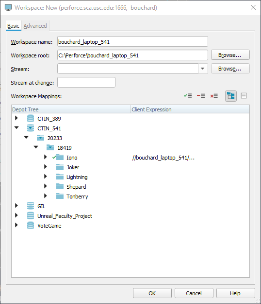
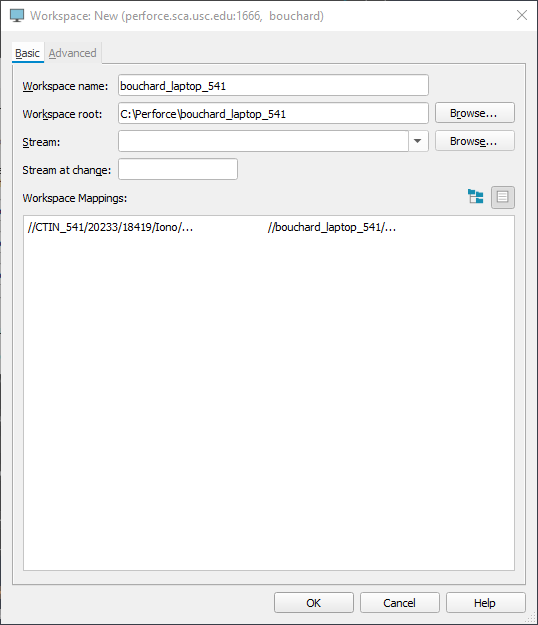
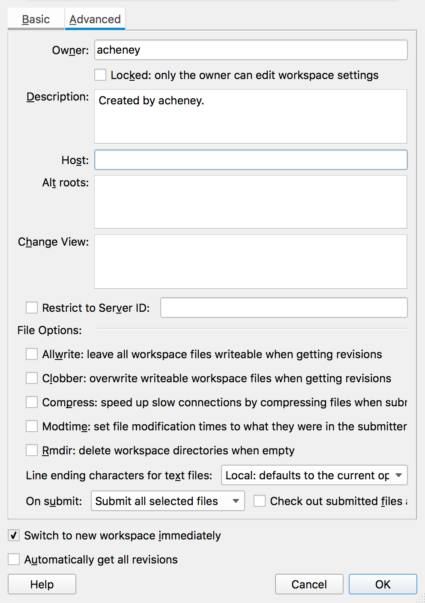
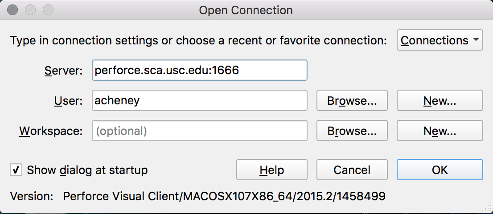
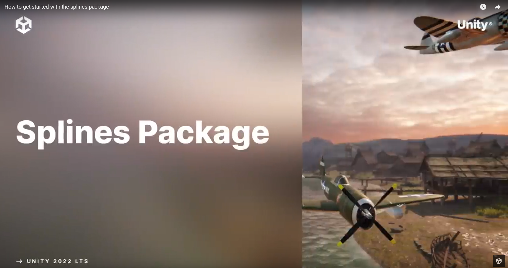
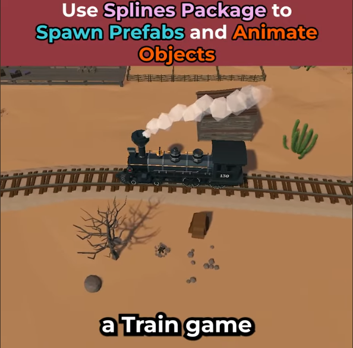

Week 3.2 — Workspaces and Splines
Perforce, more carefully this time — plus an introduction to splines and the math behind curved shapes.
This session returns to Perforce to set up a more sophisticated workspace — one that maps just your team’s folder rather than the whole class depot — then introduces splines: what they are, how they relate to vector graphics, and how to author them in Unity. It closes with the Unwin architecture reading and setup for the Racing Project.
Today’s Agenda — Perforce, Again
We’re returning to Perforce to set up slightly more sophisticated workspaces.
Basic Workspace Setup
You’ve practiced setting up basic workspaces several times, and you may even remember the steps:
- Change the workspace name (
username_computername_course). - Change the workspace root.
- Show the workspace mappings as text.
- Delete all the lines except the one for the relevant course.
- Go into the Advanced tab and delete the Host text.
This maps the entire class depot to the workspace root directory on your computer.
If you’d prefer a video walkthrough of the basic setup and checking in a Unity project, see Peter’s video: https://vimeo.com/605302677
Advanced Workspace Setup
We can spend a little extra effort to set up a workspace that maps just a specific part of the class depot to the folder on your computer. There are two advantages:
- You can’t accidentally delete your classmates’ files. If your workspace only maps to your project folder, the deletions that tend to happen while people are still learning Perforce can’t reach anyone else’s work.
- You avoid path-length problems. Unity sometimes generates very long file names in its Library. Mapping an entire class depot to your hard drive tends to produce really long directory paths, and Unity projects can stop working when a file path is too long for the operating system to process. A narrower mapping fixes this.
Start out creating a new workspace the same way as before — change the workspace name and the workspace root — but keep a couple of things in mind:
- When you set your workspace name, you might specify the project rather than the course: something like
bouchard_laptop_389-racing. - When you set your workspace root, keep the file path as short as possible. Don’t bury it in a long folder hierarchy inside Documents. On Windows, put it somewhere like
C:\389; on a Mac, somewhere like/Users/bouchard/P4.
Now walk through the mapping, one step at a time. Don’t click OK until the very end. (Several of these steps happen on the same screen.)
In folder view, expand the depot tree to CTIN_389 → the semester number → your class section, where you’ll find your team’s folders (set up ahead of time). Select all the top-level depots, including this class’s, and click the red X to remove them from the mapping. Then highlight your team’s folder and click the green checkmark to add just that folder.

P4V folder view — remove the top-level depots, then add just your team’s folder (here the workspace maps onlyIono).
Switch to text view. You should now have a single mapping line. The right-hand side includes some extra directories beyond the workspace name — edit it down to just //, your workspace name, and /....

Text view — a single mapping line, trimmed to//workspace-name/....
On the Advanced tab, delete anything next to Host, leave everything else, and now click OK.

Clear the Host field on the Advanced tab, then click OK.Finally, log into your workspace.

Log in via the Open Connection dialog.What Is a Spline?
A spline is a mathematically defined curve. Behind the scenes it uses a series of control points and tangents to calculate the shape of the curve.
Splines are a type of vector graphic — graphics defined by math — as opposed to raster graphics, which are made of pixels. (For reference: Adobe Illustrator is a vector program; Photoshop is raster-based.) Unity generally uses raster graphics to render your game, though UI elements contain some vector elements. You can use vector graphics if you like, with a package like Freya Holmér’s Shapes.
Related to vector-defined shapes, 3D modeling software (including ProBuilder) offers parametric models — shapes like arches and stairs where you input numbers to modify the shape. You can ask ProBuilder to create curved stairs, then change the diameter of the curve or the number of steps. The result, though, isn’t a purely mathematical shape like a line or sphere; it’s a set of points defining a mesh. That’s (sort of) the 3D equivalent of rasterization.
There are simpler and more complicated ways to create these curves: Catmull-Rom, B-splines, and hermite splines. The most basic kind is a bézier curve, a type of hermite spline. You can learn more about the math involved if you’re interested — but luckily, you don’t have to.
The Unity Splines Package
Unity has a package for authoring and working with splines. There’s a one-minute introduction to installing the package, setting up a spline, and adding a GameObject that animates along it.

Unity’s first-party Splines package.The package has other features too, such as generating a surface or spawning instances of a prefab along the spline.

Spawning prefabs along a spline — like this train game.Unity didn’t have a first-party splines package for many years, so various Asset Store developers stepped in to fill the gap — and those packages offer features the Unity one doesn’t. The Curvy package, for example, is one of the oldest and most built-out: it supports different types of spline, whereas Unity offers only bézier curves (the simplest, but the least flexible).
Reading — Analyzing Architecture
Analyzing Architecture by Simon Unwin, Chapter 2: Basic Elements of Architecture. Read by Monday — we’ll discuss in class.
This chapter takes a very introductory, foundational approach to architecture, positioning it in a way that has clear applications to the design of virtual spaces in games. Much of the chapter lists and describes the component elements of architectural forms.
See You Next Time
Be prepared to discuss the reading on Monday. Set up your Racing Project on Perforce using the advanced workspace you built today — we’ll playtest on Monday, September 22.